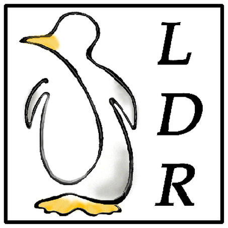

[successivo] [precedente] [inizio] [fine] [indice generale] [hall of fame] [indice analitico]
Gaetano Paolone <bigpaul@linuxfaq.it>
3.0 (2001.08.10)
|
 |
Gaetano Paolone è laureato in Odontoiatria e protesi dentaria ed esercita in qualità di libero professionista in Roma. Nel tempo libero si dedica all'informatica ed in particolare a quella libera.
LDR: Linux Domande e Risposte
Copyright © 1999-2001 Gaetano Paolone
bigpaul @ linuxfaq.it
This information is free; you can redistribute it and/or modify it under the terms of the GNU General Public License as published by the Free Software Foundation; either version 2 of the License, or (at your option) any later version.
This work is distributed in the hope that it will be useful, but WITHOUT ANY WARRANTY; without even the implied warranty of MERCHANTABILITY or FITNESS FOR A PARTICULAR PURPOSE. See the GNU General Public License for more details.
You should have received a copy of the GNU General Public License along with this work; if not, write to the Free Software Foundation, Inc., 675 Mass Ave, Cambridge, MA 02139, USA.
Una copia della licenza GNU General Public License, versione 2, si trova nell'appendice B.
L'immagine di copertina è una realizzazione di Alessandra Toti. L'autore chiede che ogni riproduzione cartacea dell'opera contenga questa immagine in copertina.
__________
Nomi e marchi citati nel testo sono generalmente depositati o registrati dalle rispettive case produttrici.
Dedicato a tutti coloro che si battono ogni giorno per l'affermazione del software libero...
Le copie cartacee LDR: Linux Domande e Risposte sono reperibili nei centri GNUtemberg!. I centri GNUtemberg! sono quei centri che vendono copie stampate di documentazione libera non ancora ufficialmente pubblicata da case editrici. Presso <http://www.gnutemberg.org> o <http://www.gnutenberg.org> sono reperibili più informazioni su questo progetto ed è reperibile anche un elenco dei centri più vicini.
|
Figura 02. GNUtemberg!. |
L'indirizzo della versione aggiornata delle LDR: Linux Domande e Risposte è:
Riproduzioni aggiornate del sito suddetto sono inoltre disponibili presso i seguenti siti:
Pluto (sezione ILDP):
inter.linux:
ziobudda.net:
king.rett.polimi.it/~ant/linuxfaq/:
|
Chiunque volesse mantenere una riproduzione aggiornata del sito delle LDR, può farlo liberamente, eventualmente segnalandolo all'autore. |
La versione 2000.04.12 di Appunti Linux di Daniele Giacomini ospita nell'ultimo tomo dell'opera, il corpo della versione 2.4 delle LDR.
La versione 2000.07.31 di Appunti di Informatica Libera di Daniele Giacomini ospita negli ultimi due tomi dell'opera, il corpo della versione 2.8 delle LDR free e nonfree.
LDR nei CD-ROM delle riviste:
CD-ROM n° 52-1 inter.net (v. 1.8);
CD-ROM 87-1 PC-Action (v. 2.2);
CD-ROM n° 56-1 inter.net (v. 2.2);
CD-ROM n° 1 Linux Magazine (v. 2.6);
CD-ROM n° 13 Linux Magazine (v. 2.9);
tutti i CD-ROM contenenti le versioni 2000.04.12 di Appunti Linux e 2000.07.31 di Appunti di Informatica Libera.
|
La diffusione di questo documento è incoraggiata in base ai termini della licenza. |
Dovrebbe essere possibile fare riferimento a questa pagina anche con il nome ldr_linux_domande_e_risposte.html
[successivo] [precedente] [inizio] [fine] [indice generale] [hall of fame] [indice analitico]